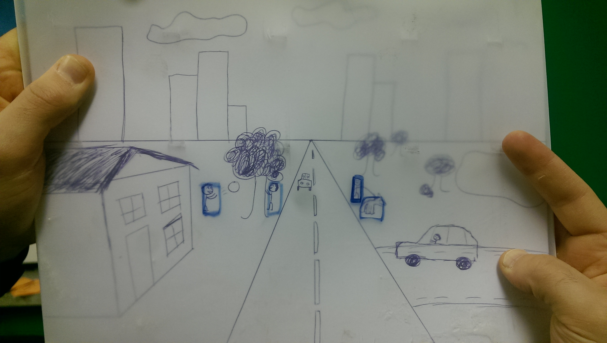
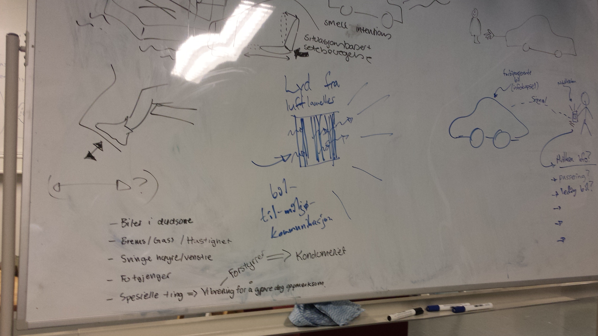

Sound plays an important role in an autonomous car, specially in terms of feedback. During the empathising process, where we interviewed a lot of people, we found out that a lot of people would feel unsafe if they did not get enough feedback in the car. They need to have “control” in the car and therefore they need the car to communicate with them. Not only that, but some people also want to communicate with their surroundings. The best way to fulfill these requirements would be to use sounds. We think sound is an important aspect of an autonomous car and therefore we chose to make a prototype of sounds.
Like Siri in IPhone, we wanted to make a prototype of a intelligent personal assistant that continuously gives you feedback to the passengers inside the car. The feedback could be about anything, like how much fuel you have left in your tank, whether the car is stopping for a pedestrian etc. We also wanted the car to make sounds with their surroundings. For instance, when the car is stopping for a pedestrian, it should say “After you sir” or something similar. That way, the pedestrian would feel safe to walk over instead of freaking out by the thought that there is no driver inside the car.
To make a demonstration of this, we recorded a video. In the video, we are cutting the scenes in order to make the illusion of the car being an autonomous car.
A young norwegian man named Knut gets in his autonomous car, ready to leave for work. Throughout the journey, Knut and pedestrians gets feedback from the car, making them feel safe and comfortable.
From the ideation phase we got the idea to integrate LED lights into the front of the car that will communicate what the car is about to do or what the pedestrian can do. A cardboard car front was built and used to make two stop motion movies that showed how the lights could possibly work.
This movie shows that the car is approaching a crosswalk where someone is waiting. The light on the front will always be lit to show that it works. When a pedestrian is perceived it will turn green, it will start braking and therefore a fluent line of red lights will ascend from the middle green light showing how much the car is braking. When the car is near the crosswalk and is about to completely stop the red brake lights will turn green, showing to the pedestrian it is safe to walk.
This movie shows the car when it is turning on an intersection. The blue light from the middle will move towards, in this case, the right of the car since it is about to turn to the right. The light will ‘predict’ the cars movement, by moving in advance of the car.
We showed these movies to some people, solely asking them what they think the car is communicating with them. An interesting result was that it is confusing that the car sometimes shows what the car will do and sometimes what it expects the pedestrian to do. Due to this, one participant thought that the car would start driving again after the lights turned green in the first movie, since in both movies the car is communicating what the car is doing. Also the sudden change of the colours of the light seems to confuse and shock the pedestrians. Though, the participants do believe that the lights could be a good way to show what the car will do, and therefore give them more trust in it. More testing about how the lights have to appear in order to communicate in an intuitive way should be conducted to create a safe concept.
Fold-down screen:
Screen embedded in the car’s roof that works in the same manner as the sun visors present in the front seats today. Would activate on folding down and provide some manner of control to all passengers in the car, depending on the master settings (done from driver’s seat). Could include view from front-, side- and rear-mounted camera to present information around the car without person having to turn around. Could take input from user’s devices so it can be used for work/entertainment. Front seat versions could include see-through AR functionality to show the car sensing its environment, avoiding the problem of viewing angle that would occur if AR were in the windshield.
AR Windshield:
AR technology to highlight points of interest directly in front of the car. This could be combined with a customizable HUD that would present wanted information directly in the windscreen if the user wishes. Presentation would be done on a module-by-module basis, and moved around/personalized by user. Possible problem would be for the AR to display correct highlight depending of viewing angle of person watching, as well as multiple people in the car.
Dashboard screen:
Main settings panel with programmable touch-screen buttons. Can be customized to also present information if the user prefers.
Implementation:
Concept art of fold-down screen done by drawing. Windshield prototype created with plastic screen over a picture/drawing of the environment so that highlights can be done directly on the plastic with erasable marker. Dashboard screen made with cardboard on aluminium foil and post-it’s to represent modules and buttons.
Vibrating seat
Tested by duck taping two phones to the back of a chair. Depends on the material in the seat (leading the vibrations). It is possible to communicate by vibrations. It is important to have the right material and part the sources of vibrations (so not everything starts shaking). Can communicate by placement and strength of vibration.
Movement of seat
Tested by manually adjusting the back of the seat (made of cardboard). Tilting the back: Feels like a comfortable way to be aware, but it does not provide much information. It is not a “stand alone solution”. A possible way of communicating can be by the “speed” the back are adjusted. Pushing the seat forward can help enhance the feeling of speeding, and might prevent people from breaking speed limits.
Movement of pedal
Manually moving pedal Good way of communicate, many possibilities. It is difficult to understand the meaning of each movement. A good way to drive semi-autonomous, because the car can communicate with the human (driver) while driving. Possible solution in cars today. (The car should not give more than small indications; big movements can create dangerous situations).
The Spank Hand / Mechanical movement
Ex. Rotating side mirrors, poking the driver, shaking headrest Shaking headrest: it is a comfortable way of waking up, but if you are already awake you might not understand the cars intentions. Poking: Something pokes you on the same side or in the direction you should “turn your awareness”. It is very intuitive to turn to the same side as something is poking you.